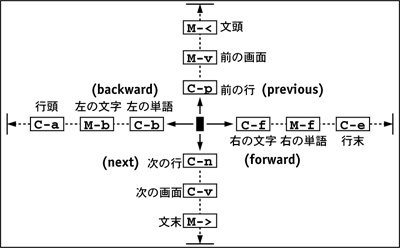
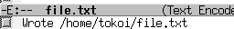
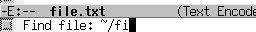
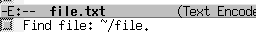

たとえば、ターミナルのシェルからコマンド (rxvt) でターミナルのウィンドウを開いたりすることができます。
| コマンドでターミナルを開く | |
|---|---|
| rxvt コマンドを実行する。 |
% rxvt[Enter] |
しかし、もとのターミナルのシェルはコマンドを受け付けなくなります。

仕方がないので、もとのターミナルで Ctrl-C をタイプします。すると、開いたウィンドウが消えてしまいます。

もう一度 rxvt を起動してターミナルのウィンドウを開き、今度は Ctrl-Z をタイプします。今度はもう一方のウィンドウは消えません。しかし、もう一方のウィンドウは全く応答してくれません。

もとのウィンドウで fg コマンドを実行すると、再びもう一方のウィンドウが動き出します。この場合、もとのウィンドウは再びコマンドを受け付けなくなります。これは、もとのウィンドウのシェルがコマンドの終了を待っているからです。コマンドがシェルを待たせて動作している状態を、フォアグラウンドで走っていると言います。
| フォアグラウンドで動かす | |
|---|---|
| fg コマンドを実行する。 |
% fg[Enter] |

もとのウィンドウでもう一度 Ctrl-Z をタイプします。そして、今度は bg コマンドを実行します。こうすると、コマンドで起動した rxvt がもとのシェルと並行して（同時に）動くため、両方のウィンドウが使えるようになります。このようにコマンドが起動したシェルと並行して動いている状態をバックグラウンドで走っているといいます。
| バックグラウンドで動かす | |
|---|---|
| bg コマンドを実行する。 |
% bg[Enter] |

もとのウィンドウで jobs コマンドを実行すれば、このシェルのバックグラウンドで走っているコマンド（バックグラウンドジョブ）の一覧が表示されます。
| ジョブの一覧を見る | |
|---|---|
| jobs コマンドを実行する。 |
% jobs[Enter] |

コマンドを実行する際に & を後ろにつけると、そのコマンドを最初からバックグラウンドで動かすことができます。
| コマンドをバックグラウンドで起動する | |
|---|---|
| rxvt コマンドをバックグラウンドで実行する。 |
% rxvt &[Enter] |

jobs コマンドでバックグラウンドジョブが２つ走っていることがわかります。jobs コマンドの出力の各行の先頭の [数字] は、ジョブ番号と言います。kill コマンドの引数に "%ジョブ番号" を指定すれば、そのジョブを終了させることができます。
| kill コマンドを使ってジョブを制御する | |
|---|---|
| ジョブを終了させる |
% kill %1[Enter] |
| ジョブを停止させる |
% kill -STOP %1[Enter] |
| 何が何でもジョブを終了させる |
% kill -KILL %1[Enter] |

fg コマンドや bg コマンドも、引数にジョブ番号を指定できます。ジョブ番号を省略したときは、最後に関わったジョブ（jobs コマンドの出力に + がついているもの）が指定されます。
テキストファイル（文字だけからなるファイル、文書ファイル）は、 これまでやってきたように cat コマンドの出力をファイルにリダイレクトして作成できます。 でもこの方法では、一旦作成したテキストファイルを修正したり、変更したりすることができません。 そこで、普通テキストファイルの作成には、 そういう編集機能を持った テキストエディタと呼ばれるアプリケーションソフトウェアを使います。
これはワードプロセッサみたいなものですが、 ワードプロセッサには文書のレイアウトや印刷の機能が備えられているのに対して、 テキストエディタは文書の編集に使う機能が充実しています。
Unix や Linux には、結構いろんなテキストエディタが用意されています。 ラインエディタは、 まだブラウン管を使うタイプの端末装置が普及していなかった頃（つまり昔）、 紙に印字しながらタイプするタイプライタ型の端末装置で使うことを考えて作られています。 ed などはプロンプトすら出さないとっても不親切な作りになってますが（しかし、これが Unix のスタイルなんですが）、 これはこれで使い込めばほかのエディタではできないような凝ったことができます。
ex/vi は Unix/Linux における基本的なエディタの一つです。 ex は ed を少しは親切にした感じのラインエディタです。一方 vi は、ex をスクリーンモード（画面上で編集するモード）にしたスクリーンエディタです。 将来 UNIX や Linux を使い込むつもりがあるなら、これらの使い方を覚えておいて損はないでしょう。ちなみに、vi のキー操作は、 jnethack というゲームをやると自然と身に付きます（ウソ）。
なお、ここで使っている vi は、実際には VIM (Vi IMproved: Vi を改良したクローン、すなわち互換品）です。興味がある人は vim コマンドを起動してみてください。
emacs は、 この中のエディタで最も高機能なエディタです。このエディタの特徴は自己拡張可能な点にあり、ほとんどの機能が emacs 自体がもつ emacs lisp というプログラミング言語で実現されています。 また英語、日本語のみならず中国語（大陸、台湾）、韓国語、タイ語など、 多国語に対応しています。xemacs はこの emacs に対して X Window System 関係の機能を拡張したものです。
| テキストエディタの種類 | |
|---|---|
| ed | ラインエディタ、玄人向け？ |
| ex | ラインエディタ、基本です。 |
| vi (vim) | ターミナル用のスクリーンエディタ |
| gvim | vim をウィンドウモードにしたもの |
| mgedit | シンプルなウィンドウモード用のスクリーンエディタ |
| gedit | タブが使えるウィンドウモード用のスクリーンエディタ |
| xedit | X Window System に昔からついているスクリーンエディタ |
| jed | emacs 等のエミュレーションができるターミナル用のスクリーンエディタ |
| emacs | ターミナル／ウィンドウ両用の高機能なスクリーンエディタ |
| xemacs | emacs の X Window System 関係機能強化版 |
ここでは emacs を基本に解説していきます。 xemacs の基本的な操作方法は emacs と同じです。 なお、emacs と、その Windows 版の Meadow についての丁寧な解説が、 栗原祐介氏の With Emacs というページにあります。
emacs を起動するには、 ターミナルのシェルから emacs とタイプして改行します。X Window System 上では、emacs は動かしっぱなしにして使うことが多いので、ここではバックグラウンドで起動しておくことにします。
| emacs を起動する |
|---|
% emacs &[Enter] |
もちろん、X Window System 上でないとき（ウィンドウモードでないとき、-nw オプションを付けたときや遠隔ログインしたとき）は、emacs をバックグラウンドで使うことはできません。もし、間違えてバックグラウンドで動かしてしまったときは、emacs は入力待ちで停止していますので、fg コマンドを使って emacs をフォアグラウンドで走らせるようにしてください。
起動すると、下のようなウィンドウが現れます。

起動すると、ウィンドウ内に簡単な解説が表示されます。 これはマウスをクリックしたり、何かキーをタイプすると消えます。
emacs は大半の操作をキーボードから行います。 メニューバーのメニューでも操作できますが、 ターミナルモード（emacs -nw というように -nw オプションを付けて emacs を起動する場合） などではメニューバーが使えないので、 ここではキー操作についてのみ説明します。
| キー操作の表記 | |
|---|---|
| C-x | [Ctrl]キーを押しながら、x をタイプする (Ctrl-X) |
| C-x C-c | C-x をタイプした後、C-c をタイプする |
| M-x | [Alt]キーを押しながら、x をタイプする (Alt-X) |
| ESC x | [ESC]キーをタイプした後、x をタイプする |
| 端末装置によっては Alt-X が使えない場合があるので、たいてい ESC x が Alt-X と同じ動作をするようになっています。 |
- バッファ
- emacs において編集対象のテキストファイルを保持する機構のことを、 バッファと呼びます。 emacs は同時に複数のバッファを管理することができます。 通常はそのうち一つのバッファの内容がウィンドウに表示されています （画面を分割して、複数のバッファを同時に表示することもできます）。
- ミニバッファ
- コマンドやファイル名などの入力を行うときには、 カーソルがウィンドウの最下行に移動します。 この場所はミニバッファと呼ばれます。
| キー操作 | |
|---|---|
| ファイルを開く | C-x C-f |
| 別のファイルを読み込む | C-x i |
| 文字入力 | その文字をタイプ |
| 一字削除 | [Backspace] |
| 挿入／上書き切り替え | [Insert] |
| カーソル移動 |  |
| 文字列の検索 |  |
| 文字列の置換 |  |
| １行空ける | C-o |
| 行末まで削除 | C-k |
| カーソル位置にマークを付ける | C-スペース |
| カーソル位置とマーク位置の入れ替え | C-x C-x |
| マーク位置からカーソル位置まで削除 | C-w |
| マーク位置からカーソル位置まで複写 | M-w |
| 削除／複写した内容を復活 | C-y |
| 変更取り消し | C-_ または C-x u |
| 操作の中止 | C-g |
| ファイルの保存 | C-x C-s |
| 名前を付けてファイルを保存 | C-x C-w |
| ヘルプのメニューを表示 | [Delete] ? |
| info を表示 | [Delete] i |
| emacs を終了 | C-x C-c |
| emacs 本来の設定では、[Delete] キーで直前の１文字を削除し、C-h ([Backspace]) でヘルプ関連の機能を呼び出すようになっていますが、６階のシステムではこの２つのキーの役割を交換しています。 |
ファイルを開くには C-x C-f をタイプします。 するとミニバッファに開くファイル名を聞いてきますので、ここで存在しないファイル名を指定すれば、そのファイルを新規に作成します。
| ファイルを作成する | |
|---|---|
| C-x C-f をタイプする。ミニバッファに開くファイル名を聞いてくる。 | |
| ここでは file.txt というファイルの作成を行うことにする。最後に [Enter] をタイプ。 | |
ファイルが存在すれば、バッファ内にそのファイルが表示されます。今は新規作成なので、バッファ内は空になっているはずです。ミニバッファには (New File) と表示されているはずです。

なお、開くファイル名は emacs の起動時に引数指定することもできます。
| 引数でファイル名を指定する |
|---|
% emacs file.txt &[Enter] |
試しに、次の内容をタイプしてみてください。間違っていても構いません。。
A girl and a boy bump into each other -- surely an accident.[Enter]
A girl and a boy bump and her handkerchief drops -- surely another accident.[Enter]
But when a girl gives a boy a dead squid -- *that had to mean something*.[Enter]
-- S. Morganstern, "The Silent Gondoliers"[Enter]
|
このバッファの内容をファイルに保存します。C-x C-s をタイプしてください。
| バッファをファイルに保存する | |
|---|---|
| C-x C-s をタイプする。バッファの内容がファイルに保存される。 |  |
ファイルが保存できたら、一旦 emacs を終了します。C-x C-c をタイプしてください。
| 問い合わせが表示されるとき |
|---|
| ファイルの編集中に、別の方法でそのファイルを修正してしまうと、バッファをファイルに保存する際に問い合わせが表示されます。また、バッファをファイルに保存せずに emacs を終了しようとしたときにも問い合わせが表示されます。問い合わせ自体は簡単な英語ですので、問い合わせにしたがって yes か no を答えてください。 |
まず、先ほど保存したファイルを開きます。C-x C-f をタイプしてください。ここでファイル名として file.txt を指定するのですが、ミニバッファに開くファイル名を聞いてきたら、試しに先頭の２文字 "fi" をタイプしてみてください。
| 既存ファイルを開く | |
|---|---|
| C-x C-f をタイプする。ミニバッファに開くファイル名を聞いてくる。 | |
| fi をタイプする。 |  |
| スペースをタイプする。 |  |
| もう一度スペースをタイプする。ファイル名が完成したら [Enter] をタイプする。 | |
ミニバッファにおいてコマンドやファイル名を入力する際、途中まで文字をタイプしたあとスペースや Tab をタイプすると、 残りの文字を補完してくれます（コンプリーション機能）。 補完の結果、コマンドやファイル名が一意に決まらない（候補が複数ある）ときは、 その一覧を表示します。
A girl and a boy bump into each other -- surely an accident.
A girl and a boy bump and her handkerchief drops -- surely another accident.
But when a girl gives a boy a dead squid -- *that had to mean something*.
-- S. Morganstern, "The Silent Gondoliers"
|
先ほどタイプした内容が表示されたら C-n C-p C-f C-b を使って、たぶん左上隅の A のところにある文字カーソルを、３行目の -- のところに移動してください。
A girl and a boy bump into each other -- surely an accident.
A girl and a boy bump and her handkerchief drops -- surely another accident.
But when a girl gives a boy a dead squid -- *that had to mean something*.
-- S. Morganstern, "The Silent Gondoliers"
|
ここで C-k をタイプすると、カーソルから右が消えます。
A girl and a boy bump into each other -- surely an accident.
A girl and a boy bump and her handkerchief drops -- surely another accident.
But when a girl gives a boy a dead squid _
-- S. Morganstern, "The Silent Gondoliers"
|
もう一度C-k をタイプすると、改行が消えて次の行とくっつきます（行が長くなるので、右端が折り返されるかもしれません）。
A girl and a boy bump into each other -- surely an accident. A girl and a boy bump and her handkerchief drops -- surely another accident. But when a girl gives a boy a dead squid -- S. Morganstern, "The Silent Gondoliers" |
さらにC-k をタイプすると、くっついた部分も消えます。
A girl and a boy bump into each other -- surely an accident. A girl and a boy bump and her handkerchief drops -- surely another accident. But when a girl gives a boy a dead squid _ |
カーソルを１行目の -- に移動してください。
A girl and a boy bump into each other -- surely an accident. A girl and a boy bump and her handkerchief drops -- surely another accident. But when a girl gives a boy a dead squid |
ここで C-y をタイプすると、先ほど消えた部分がこの位置に挿入されます。
A girl and a boy bump into each other -- *that had to mean something*.
-- S. Morganstern, "The Silent Gondoliers"-- surely an accident.
A girl and a boy bump and her handkerchief drops -- surely another accident.
But when a girl gives a boy a dead squid
|
次に文字列の検索を行ってみましょう。C-s をタイプしてください。するとミニバッファに I-serch: と表示されます。
| -E:-- file.txt |
| I-search: |
ここで girl と打ち込んでください。多分カーソルは３行目の girl という単語の位置に移動したと思います。
A girl and a boy bump into each other -- *that had to mean something*.
-- S. Morganstern, "The Silent Gondoliers"-- surely an accident.
A girl and a boy bump and her handkerchief drops -- surely another accident.
But when a girl gives a boy a dead squid
|
この状態でもう一度 C-s をタイプすると、４行目の girl のところに移動します。
A girl and a boy bump into each other -- *that had to mean something*.
-- S. Morganstern, "The Silent Gondoliers"-- surely an accident.
A girl and a boy bump and her handkerchief drops -- surely another accident.
But when a girl gives a boy a dead squid
|
さらにC-s をタイプすると、ここより後に girl はないので、ミニバッファに次のようなメッセージが出ます。
| -E:-- file.txt |
| Failing I-search: girl |
それでも、もう一度 C-s をタイプすると、今度はバッファの先頭から girl を探し始めます。
A girl and a boy bump into each other -- *that had to mean something*.
-- S. Morganstern, "The Silent Gondoliers"-- surely an accident.
A girl and a boy bump and her handkerchief drops -- surely another accident.
But when a girl gives a boy a dead squid
|
１行目の girl のところにカーソルが来たら、[Enter] をタイプしてください。すると検索を開始した位置が記憶されます（マーク）。今度は C-s を２回続けてタイプしてください。すると再び girl （すなわち直前に探した文字列）を探し始めます。
A girl and a boy bump into each other -- *that had to mean something*.
-- S. Morganstern, "The Silent Gondoliers"-- surely an accident.
A girl and a boy bump and her handkerchief drops -- surely another accident.
But when a girl gives a boy a dead squid
|
３行目の girl のところに来たら、[Enter] をタイプしてください。そして C-w をタイプすると、１つ目の girl の位置（マーク位置）から現在位置までが削除されます。なお、カースそる位置に明示的にマークを付けるには、C-スペース をタイプします。
A girl and a boy bump and her handkerchief drops -- surely another accident. But when a girl gives a boy a dead squid |
C-w で削除した内容も、C-y で現在のカーソル位置に挿入できます。それでは、最後にC-_ を何回かタイプしてください。これまでに行った編集作業が取り消されます。ファイルを開いた直後の状態に戻ったら、今度は C-x C-w をタイプしてください。
| -E:-- file.txt |
| Write file: ~/ |
ここに file2.txt とタイプして、[Enter] をタイプしてください。file2.txt というファイルが作成されます。C-x C-s が現在のファイル名でファイルを保存するのに対し、C-x C-w は別のファイル名でファイルを保存します。
保存が終了したら C-x C-c で emacs を終了してください。
emacs ではこれまで使用してきた kinput2 による日本語入力方法（「Shift-スペース」による切り替え）のほかに、emacs 自身に組み込まれた egg（たまご）と呼ばれる日本語入力方法が使えます。
それでは、emacs で file3.txt というファイル名のテキストファイルを作りましょう。
| file3.txt を作成する |
|---|
% emacs file3.txt[Enter] |
egg による日本語の入力を開始するには、C-\ をタイプします。 するとウィンドウの下から２行目の左端に “[あ]” が現れます。 そのあとローマ字で日本語の文章をタイプしスペースをタイプすると、漢字への変換が行われます。 入力中の日本語は | .. | で挟まれおり （フェンスモード）、 文節の間にスペースが空いています。
| 既存ファイルを開く | |
|---|---|
| C-\ をタイプする。 | |
| ローマ字で文章をタイプする。 | |
| スペースをタイプすると漢字に変換される。 | |
| C-i をタイプすると文節が切り詰められる。 | |
| C-f で文節を移動できる。 | |
| スペースをタイプすると次の候補が現れる。 | |
| [Enter]をタイプすると確定する。 | |
日本語の入力モードから抜け出るには、 もう一度 C-\ をタイプしてください。
| キー操作 | |
|---|---|
| 日本語入力開始／終了 | C-\ |
| 漢字に変換 | スペース |
| 次候補 | スペース または C-n または ↓ |
| 前候補 | C-p または ↑ |
| 文節を伸ばす | C-o |
| 文節を縮める | C-i |
| 次の文節 | C-f または → |
| 前の文節 | C-b または ← |
| 最初の文節 | C-a |
| 最後の文節 | C-e |
| 確定する | [Enter] または C-l |
| 平仮名に変換 | M-h |
| 片仮名に変換 | M-k |
| 候補一覧表示 | M-s |
| 記号入力など | C-^ |
| 取り消し | C-g |
| 単語登録 | M-x toroku-region |
“z+１文字”で日本語のいくつかの記号文字を入力することができます。
| z1 | ○ | z2 | ▽ | z3 | △ | z4 | □ | z5 | ◇ |
| z6 | ☆ | z7 | ◎ | z8 | ￠ | z9 | ♂ | z0 | ♀ |
| z! | ● | z@ | ▼ | z# | ▲ | z$ | ■ | z% | ◆ |
| z^ | ★ | z& | ￡ | z* | × | z( | 【 | z) | 】 |
| zq | 《 | zw | 》 | zr | 々 | zt | 〆 | zp | 〒 |
| zQ | 〈 | zW | 〉 | zR | 仝 | zT | § | z. | … |
| zv | ※ | zh | ← | zj | ↓ | zk | ↑ | zl | → |
また、“Z+アルファベット１文字”で、 全角文字のアルファベット（本当は『全角文字』とは言いたくない）を入力できます。
| ZA | Ａ | ZB | Ｂ | ZC | Ｃ | ZD | Ｄ | ZE | Ｅ |
変換しても一発で出てこない単語で、 自分の名前など結構良く使うものは、 登録しておくと便利です。
とりあえず、emacs のバッファのウィンドウ上に、 “なんとかして” その単語を表示させてください。 そしてその単語の先頭に C-スペース でマークをつけ、 カーソルを移動して単語全体を選択したあと、 M-x wnn7-toroku-region をタイプし、[Enter] をタイプします （コマンドは一部をタイプ後スペースをタイプすれば補完されます）。
| 単語を辞書に登録する | |
|---|---|
| 単語の先頭で C-スペースをタイプする。 | |
| 単語の後ろに移動する。 | |
| emacs の wnn7-toroku-region コマンドを実行する。 |
M-x wnn7-toroku-region[Enter] |
| 読みを入力する。 |
辞書登録『栄谷』 読み：さかえだに[Enter] |
| 辞書は ud（ユーザ辞書）を選択する。 |
登録辞書名: 0.ud[Enter] |
| 品詞（大分類）を選択する。 |
品詞名:: 0.普通名詞/ 1.固有名詞/ 2.動詞/ ...(以下略) |
| 品詞（小分類）を選択する。 |
品詞名;[固有名詞]: 0.人名 1.地名 ...(以下略) |
単語の範囲をマウスでドラッグしたりダブルクリックしても、 その部分の選択を行うことができます。
シェル上でテキストファイルの印刷を行うには lpr コマンドを用います。 ただし、できるだけ a2ps や mpage というコマンドを介して、用紙を節約するようにしてください。
| テキストファイルを印刷する |
|---|
% lpr ファイル名[Enter] % mpage ファイル名 | lpr[Enter] % a2ps ファイル名[Enter] |
なお、emacs の中では「プリンタのボタン」でバッファの内容を印刷できます。
印刷を取り消したいときは、lpq コマンドで印刷ジョブを確認してから、lprm コマンドの引数にジョブ番号を指定します。
（１）emacs には、実際に使いながら使い方を学ぶチュートリアルが用意されています。チュートリアルを読むには、メニューバー（emacs のウィンドウの最上部）の "Help" から "Emacs Tutorial" を選んでください。このチュートリアルを読みながら、 指示に従って操作の練習を行ってください。
（２）下の文章は日本国憲法の「前文」である。 この内容の kenpou.txt というファイル名のテキストファイルを作成しなさい。 最後に自分の名前とログイン名を書いておいてください。
| emacs は「テキストエディタ」なので、 文書の見栄えのレイアウトをするような機能はほとんど持っていません。 長い行はウィンドウの右端で折り返しますが、 これもあくまで表示のために便宜的に行っているに過ぎず、 それが「１行」として取り扱われていることには変わりありません （C-n や C-p をするとわかります）。 |